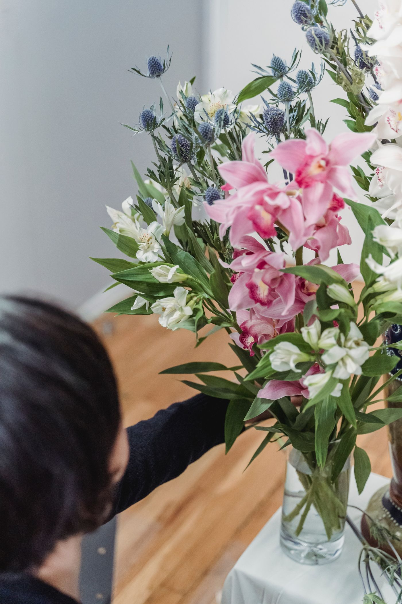
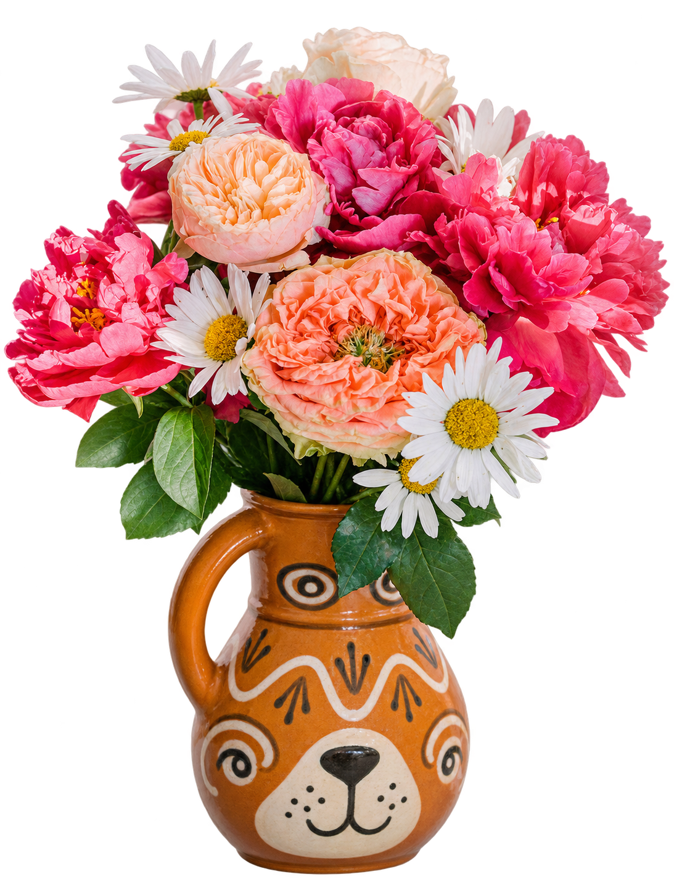
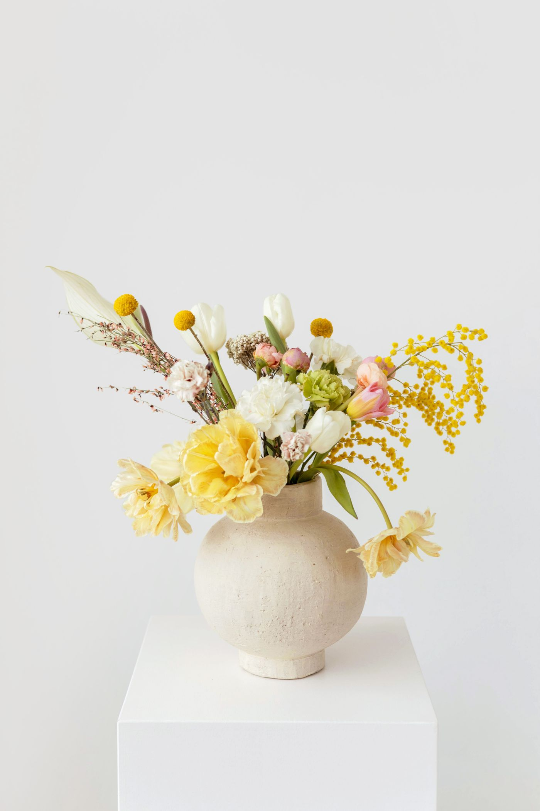

Een bos
blijmakers.
Met liefde geschikt, voor jouw tafel.
Ontdek de kleur-edit

Van onze handen naar jouw tafel.
Peach, roze, wit en alles wat ertussenin gebeurt. Een bloem mag haar eigen kant op groeien; dat maakt een boeket juist levendig.
Kleur naast kleur
Een zachte tint laat een felle bloem extra spreken.
Gewoon, omdat het kan
Ook een dinsdag zonder gelegenheid verdient een mooie bos.
Zet iets vrolijks op tafel.

Ontdek de kleur-edit